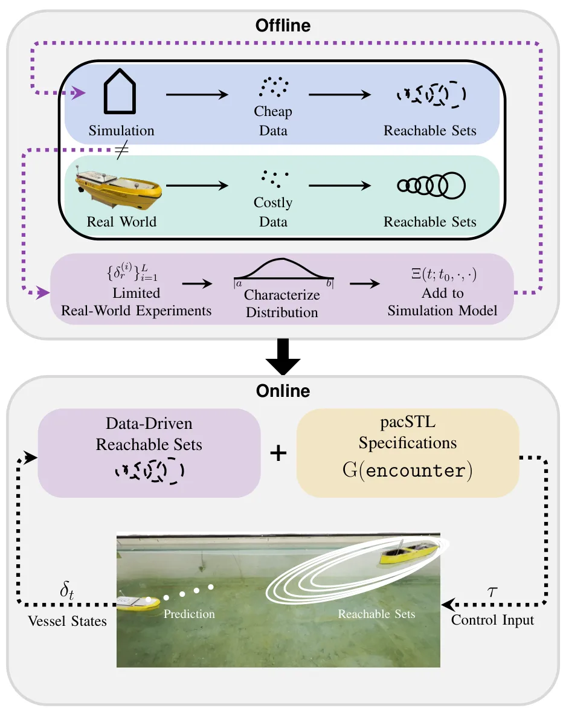

新论文 · 日期 2026-08-05 · score 8 · cs.GR, cs.CV
作者：Seonghak Lee, Junhee Cho, Jisoo Park, Min-Gyu Park, Jongmin Lee, Ju Hong Yoon, Junseok Kwon
评分 8/10
3D Gaussian Splatting网格重建UV 参数化联合优化可动画虚拟形象
一句话工作总结：用共享 UV 空间把可控网格与高保真 3DGS 真正绑定起来，重点价值在几何一致性、联合优化和可动画重建。
URHead 提出一种面向高保真、可动画头部虚拟形象的统一表示，使网格与 3D Gaussian Splatting 共享同一套 UV 参数化。网格负责精确几何控制，Gaussian 负责照片级细节；通过联合优化和自适应 Gaussian 采样，系统自动分配两类表示的职责，在保留完整参数化控制能力的同时维持个体细节。论文报告其重建质量和动画一致性优于现有方法。
We present URHead, a unified representation for high-fidelity and animatable head avatars that fundamentally redefines mesh-Gaussian integration. While mesh-based methods offer precise geometric control but la…

新论文 · 日期 2026-08-05 · score 6 · cs.RO
作者：Mohammadali Rashidioun, Michael Sosa, Petras Swissler
评分 7.6/10
相对定位模块化机器人接触约束群体机器人自组装
一句话工作总结：把极弱的二值接触关系转化为相对位姿约束，以虚拟力迭代恢复自组装群体的空间布局。
面向模块化机器人自组装，论文仅利用机器人之间是否物理连接的二值接触信息进行相对定位，无需外部跟踪设施或高成本传感器。其虚拟力框架让位姿迭代地被已对接邻居吸引、被未连接机器人排斥。塔和悬臂结构的仿真表明，该方法能够在组装过程中恢复相对布局，并支持可扩展的自由形态自组装。
Accurate localization remains a key challenge in swarm robotics, particularly for self-reconfigurable systems that must identify relative positions to form diverse structures. Most existing approaches rely on…

新论文 · 日期 2026-08-05 · score 5 · cs.RO, cs.SY, eess.SY
作者：Yi-Hsuan Chen, Shuo Liu, Wei Xiao, Calin Belta, Michael Otte
评分 7.1/10
安全导航控制障碍函数Minkowski 运算有符号距离场多面体几何
一句话工作总结：避免用球或椭球保守近似多面体，直接把精确几何距离及旋转梯度用于安全控制。
论文为多面体机器人与多面体障碍物构造精确有符号距离函数，并将其接入非光滑控制障碍函数。方法借助 Minkowski 运算，通过碰撞外和碰撞内两个配套凸程序计算带符号距离；在二维情形下，再由最优性条件和敏感性分析推导统一解析梯度，包括精确旋转梯度。实验覆盖纯平移、独轮车模型的不安全初始化恢复及单、多障碍规避。
Safely navigating polytopic environments while respecting the dynamics, control, and exact geometry of the underlying system is a challenge in robotics. Control barrier functions (CBFs) synthesize safe control…

新论文 · 日期 2026-08-05 · score 4 · cs.RO, cs.SY, eess.SY
作者：Elizabeth Dietrich, Hanna Krasowski, Emir Cem Gezer, Roger Skjetne, Asgeir Johan S{\o}rensen, Murat Arcak
评分 6.8/10
海事导航可达集实时监测不确定性安全规范
一句话工作总结：用数据驱动可达集在线判断导航行为是否仍满足复杂规范，为不确定定位与轨迹预测之上的风险监测增加一层保障。
论文提出在不确定性下实时监测机器人任务与安全规范的框架，以数据驱动可达集减少对大规模数据或显式不确定性分布的依赖。作者将框架实例化到受交通规则约束的海事导航，给出数据高效的可达集构建流程和适合实时部署的监测形式。仿真与硬件实验显示，其风险检测优于现有指标。
Robotic systems must operate under uncertainty while satisfying complex task and safety specifications. Monitoring such specifications under uncertainty remains challenging, as existing formulations typically…

新论文 · 日期 2026-08-05 · score 4 · cs.RO, cs.SY, eess.SY
作者：Peter Werner, Tobia Marcucci, Daniela Rus
评分 6.7/10
轨迹优化双凸优化最短时间避碰无人机导航
一句话工作总结：以分离平面和双凸交替优化统一最短时间、平滑性与避碰，并支持任意阶导数约束。
论文通过变量替换联合凸化最短时间目标和任意阶导数约束，再以时变分离平面处理避碰，把问题化为双凸程序。求解器在最大间隔分离平面计算与轨迹优化之间交替，只为当前轨迹碰撞到的障碍物添加平面，使轨迹能够跨越障碍物并逃离部分局部极小值。方法从简单无碰撞折线初始化可保证收敛，并在无人机导航和双臂料箱卸载上获得与先进分解式规划器相当的计算时间。
We present a biconvex approach for minimum-time motion planning around convex obstacles that is guaranteed to converge, is anytime, and supports derivative constraints to arbitrary order. We jointly convexify…